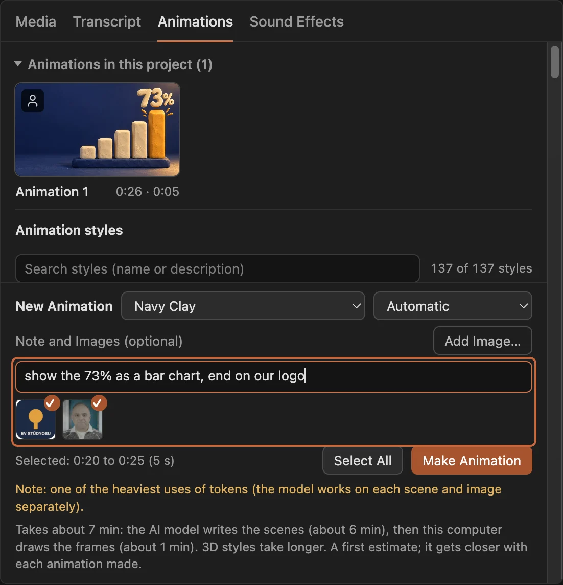
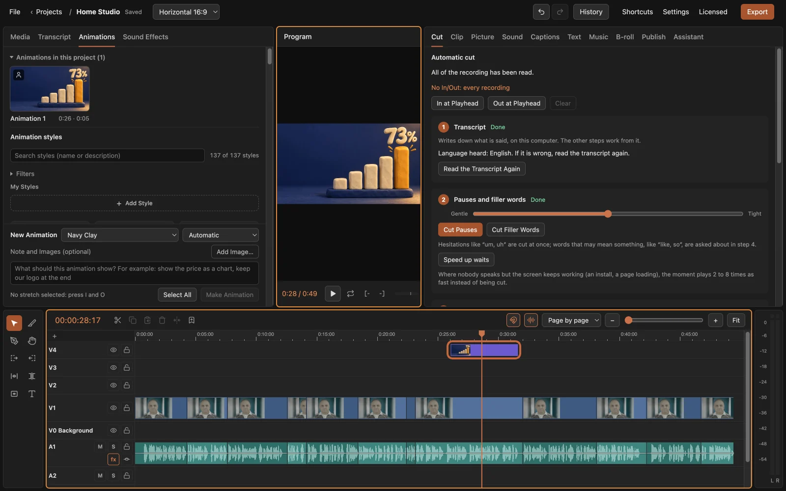
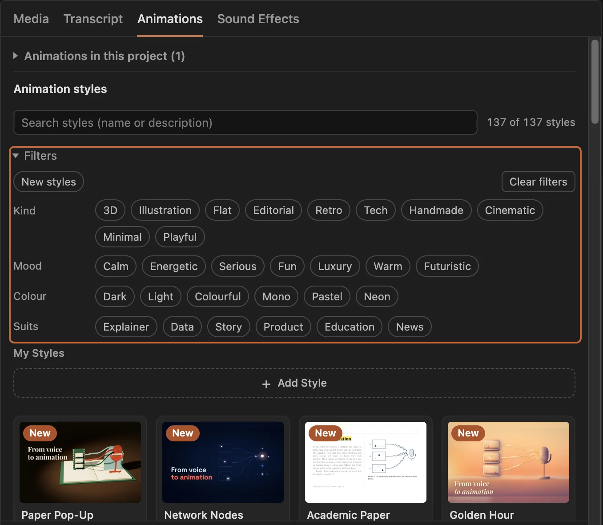

Animations
Pick a stretch of your video and Kilnframe writes an animation for what you say there: titles, charts, 3D scenes, hand-drawn lines. Your AI model writes the scenes; your computer draws them.

Make an animation
- Choose a stretchPress I where it should start and O where it ends, or select words in the transcript and choose Mark In and Out to Selection. The tab shows it: Selected: 0:20 to 0:25 (5 s). Select All takes the whole cut.
- Pick a styleUnder New Animation, choose a style from the list or the gallery above it, and where the animation sits: Automatic, Full Screen or Beside the Speaker.
- Steer it, if you likeUnder Note and Images (optional), write what it should show, for example “show the price as a chart, keep our logo at the end”. Add Image… adds a logo, product shots or screenshots (up to 12); write what each one is.
- Make itPress Make Animation. Before you press, the tab says about how long it takes: the model writes the scenes, then this computer draws the frames. 3D styles take longer.
Scene stills
With the stills shown (the default), you first see one still for each scene under Scene stills. Nothing is drawn yet.
- To change a scene, write what should change and press Rewrite Scene. The note changes only that scene.
- When you like them, press Approve and Create. The animation is drawn and placed on its own track.
- Discard drops the written scenes. To add a new image, discard and add it.
To draw at once without the stills, tick Draw straight away, without showing the stills in Settings › AI › Animations.
Animations in this project
Every animation made so far is listed with its time and length. A stretch that already has one can be made again: Make Again replaces it in place, on the same track.

Speaker in front
Pick the animation clip and tick Speaker in front: you are cut out by your mask and put in front of it, so the animation passes behind you. Cut the clip with the razor to set it for each piece.
Styles
Animation styles holds 137 styles. Search them by name or description, filter them, or make your own from pictures you like. See Animation styles and your own.

Animations are among the heaviest AI jobs: the model works on each scene and image separately. The tab says so before you start.